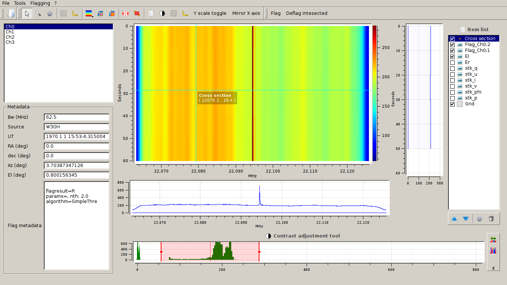

Graphical user’s interface¶
The graphical users’s interface provides access to the DW functionalities available with the text interface and data visualization.
Interface elements¶
Toolbar buttons¶
- Open file: start the open file dialog.
- Selection:
- Rectangle zoom: zoom on the selected area
- Parameters: open a dialog to set some visualization parameter
- Grid: open a dialog to set some grid visualization parameter
- Axis style: open a dialog to set some axis visualization parameter
- Select colormap: select the colormap for the active data
- Cross section: create a cross section tool (non persistent cross section tool can be activated pressing Alt button and moving the mouse pointer over the data)
- Average cross section: create a average cross section tool showing averaged cross section of the selected area
- Channel range flagging: create a channel range selection tool
- Area flagging: create a area flagging selecion tool
- Item list manager: toggle on/off the item list panel
- Contrast panel: toggle on/off the contrast panel
- Grid: toggle on/off the data grid
- Toggle axis: toggle axis MHz-Sec and Channel-Sample
- Y scale toggle: toggle on and off log scale on y axis
- Mirror x axis: invert the x axis scale (required in some acquisition setup to have the proper values on the scale)
- Flag: create a flagging matrix from the selected areas (require area/s is/are selected usign a selecion tool)
- Deflag intesected: deflag all previous flags intersecting a rectangle area (require area/s is/are selected usign a selecion tool)
Main Window¶
{kind=link}
The main interface consists in several panels:
Datasets and metadata¶
On the top of left side there is a list of selectable datasets found in the file. The datasets are named after the relative table in the file.
Beneath this list there is a panel containing informations about the datasets and the selected data or flag.
Values are:
- Bandwidth: Is a float number expressing the bandwidth of the dataset misured in MHz.
- Source: The observed source.
- UT: The time in UT (year month day hour:minute:second.microsecond) at the begin of the observation.
- RA: The right ascension in degree
- Dec: The declination in degree
- Az: The azimut in degree
- El: The elevation in degree
- Flag Metadata: A list of metadata of the selected flag. These values depends of the method by which the flag was defined.
Waterfall plot and cross-sections¶
In the centre of the interface there is the waterfall plot of the selected data and two panels for the cross-sections.
The cross section can be seen using the Cross section tool, the Average cross section tool or whit the Selection tool moving the mouse pointer while keeping the key alt pressed.
Data list and flags¶
On the right there a tick list in which are shown the data in the datasets, the saved flagsets and the tools in use.
The items in the list can be seen as layers in the plot panel, the latest which is active is the one on the top of the plot, and then the visible one. The flagset are shown as transparent grey areas.
Every tool that works on the plot, acts on the selected item of this list.
Contrast tool¶
On the bottom of the interface there is a panel to control the levels of contrast of the selected item in the data list.
As already said, this tool acts on the selected item of the data list, so to see how it is working the item has to be the top layer of the plot.
Flagging¶
Manual flagging¶
To mannually flag an area of the waterfall plot there are two tools:
- Channel range flagging
- Area flagging
They will create an element in the data list.
One or more of these elements can be selected and saved as a flagset with the command Flag found in the flag toolbar or in the flag menu.
Auto RFI detection¶
To run the automatic RFI detection:
- select Flagging -> Auto RFI detection.
- choose the detection algorithm to use and press OK
- change the default parameters if necessary, then press OK
- choose the flagging matrices to calculate.
Automatic detected RFI matrices are added to the data structure.
To see the available algorithms refear to RFI Algorithms